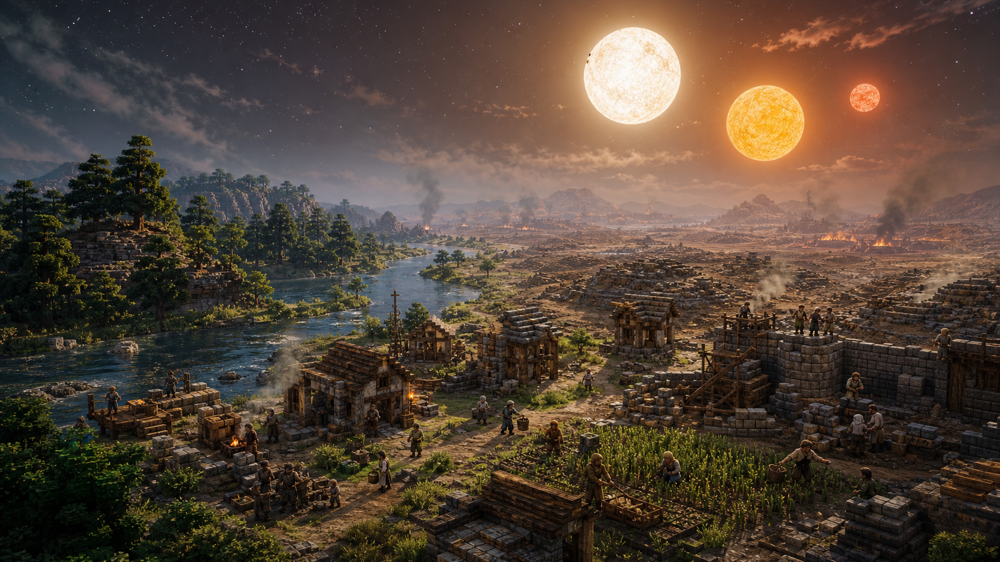
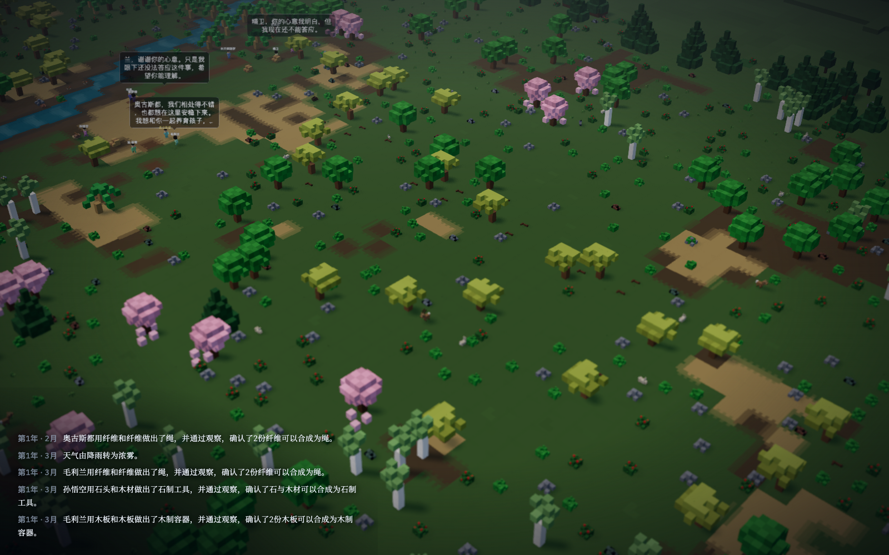

Press Kit · 媒体资料包
ELAND
规则优先的涌现式文明模拟。灵感来自《三体》中的三体游戏： 文明在恒纪元与乱纪元中诞生、发展并留下结局——每个文明的编号、成就与毁灭原因，都来自真实模拟历史。
事实表
| 名称 | ELAND |
|---|---|
| 类型 | 涌现式文明模拟 / 上帝视角沙盒 / AI 社会实验 |
| 平台 | Windows · macOS（Steam，发行准备中） |
| 玩家人数 | 单人 |
| 核心机制 | 规则优先的 Agent 社会模拟 · 三体纪元气候 · 玩家对话与第一人称化身 |
| 开发 | ELAND Team（开源项目） |
| 状态 | 积极开发中，Steam 商店页筹备中 |
| 联系 | press@eland.game（筹备中，暂请通过社区渠道联系） |
游戏简介
一句话
没有写好的历史：一群先民在三颗太阳之下从一无所有开始，建起文明，或在某个清晨归零。
一段话
ELAND 是一款规则优先的涌现式文明模拟。先民 Agent 在三维体素沙盒中采集、制造、建造、结成家庭、 传承知识；三颗太阳带来无法预测的恒纪元与乱纪元。玩家是他们口中的"主"：可以交谈、示警、误导， 也可以化身其中亲历生存。每个文明的编号、成就与毁灭原因都来自真实模拟。
详细介绍
在 ELAND 的三维沙盒世界里，森林覆盖大地，河流穿过荒野。一群以历史人物为代号的先民在此醒来， 没有工具，没有房屋，也没有现成的文明答案。他们寻找食物、制造工具、修筑居所；也会相爱、争吵、 结成家庭，把经验传给后来者。技术不是菜单里的科技树，而是从观察、试错、学习和传承中生长出来的。 文明的道路从不平静：饥饿、野兽与同伴间的冲突随时可能终结生命，而无情的三星系统还会带来无法预测的 恒纪元与乱纪元——一次漫长严寒、一场失控野火，或某个三日凌空的清晨，都可能让数百年的积累顷刻归零。 大模型参与对话、表达与协商；但行动能否发生、造成什么后果，始终由同一套世界规则裁定。 有些文明会制造农具、建立聚落，走向制度与传承；另一些还未熬过第一个乱纪元，便只剩下一行纪年。 世界终会重启，而下一次，又会长出另一段历史。
特性
- 规则优先的涌现社会：需要、人格、记忆与关系驱动的先民 Agent
- 三体纪元系统：恒纪元与乱纪元不可预测，预言、脱水休眠与复苏
- 从石器到电力与信息：技术由观察、实验、记录与教学真实生长
- 与先民自由交谈：建议进入真实记忆，但他们未必服从
- 第一人称化身：以某个先民的身体、知识与关系亲历世界
- 大模型只做表达：所有行动与后果由确定性本地规则裁定
- 文明编年：编号、成就与毁灭原因全部来自真实模拟历史
- 连续缩放：从三体宇宙无缝俯冲进入人间体素世界
美术与截图（点击下载原图）





以上画面均为当前开发版本实时截取，未做后期修饰。欢迎媒体与内容创作者在报道、评测与视频中自由使用，注明出处即可。